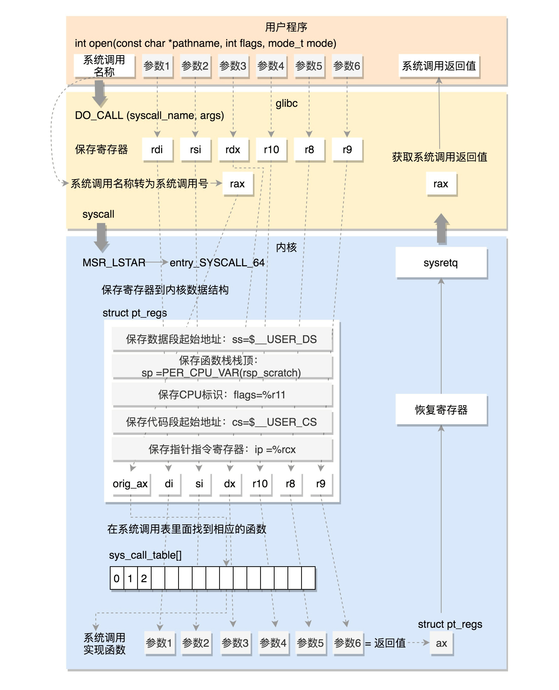
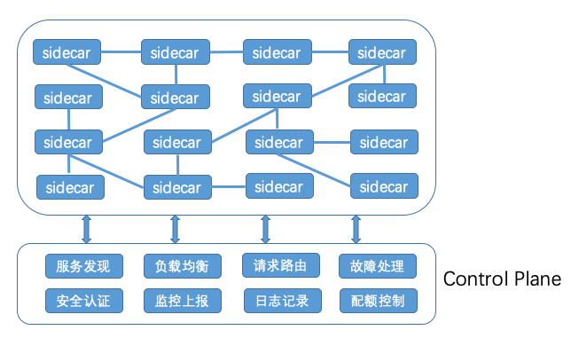

32位系统的调用流程

- 将调用参数放入寄存器中, 由系统调用名得到系统调用号, 放入 eax
- 执行 ENTER_KERNEL(一个宏), 对应 int $0x80 触发软中断, 进入内核
- 调用软中断处理函数 entry_INT80_32(内核启动时, 由 trap_init() 配置)
- entry_INT80_32 将用户态寄存器存入 pt_regs 中(保存现场以及系统调用参数), 调用 do_syscall_32_iraq_on
- do_syscall_32_iraq_on 从 pt_regs 中取系统调用号(eax), 从系统调用表得到对应实现函数, 取 pt_regs 中存储的参数, 调用系统调用
- entry_INT80_32 调用 INTERRUPT_RUTURN(一个宏)对应 iret 指令, 系统调用结果存在 pt_regs 的 eax 位置, 根据 pt_regs 恢复用户态进程
64位系统的调用流程

- 通过系统调用名得到系统调用号, 存入 rax; 不同中断, 执行 syscall 指令
- MSR(特殊模块寄存器), 辅助完成某些功能(包括系统调用)
- trap_init() 会调用 cpu_init->syscall_init 设置该寄存器
- syscall 从 MSR 寄存器中, 拿出函数地址进行调用, 即调用 entry_SYSCALL_64
- entry_SYSCALL_64 先保存用户态寄存器到 pt_regs 中
- 调用 entry_SYSCALL64_slow_pat->do_syscall_64
- do_syscall_64 从 rax 取系统调用号, 从系统调用表得到对应实现函数, 取 pt_regs 中存储的参数, 调用系统调用
- 返回执行 USERGS_SYSRET64(一个宏), 对应执行 swapgs 和 sysretq 指令; 系统调用结果存在 pt_regs 的 ax 位置, 根据 pt_regs 恢复用户态进程
64位系统调用的流程

性能问题的来源
- 资源瓶颈的分析思路，跟系统资源瓶颈是一样的。
- 依赖服务的瓶颈，可以使用全链路跟踪系统，进行快速定位。
- 应用自身的问题，则可以通过系统调用、热点函数，或者应用自身的指标和日志等，进行分析定位。
CPU优化
- 进程绑定CPU, 把进程绑定到一个或者多个 CPU 上，充分利用 CPU 缓存的本地性，并减少进程间的相互影响。
- 中断程序多CPU负载均衡，以便在发生大量中断时，可以充分利用多CPU的优势分摊负载。
- 使用 Cgroups 等方法，为进程设置资源限制，避免个别进程消耗过多的CPU。
- 为核心应用程序设置更高的优先级，减少低优先级任务的影响。
####内存优化
- 禁止Swap
- 使用 Cgroups 等方法，为进程设置内存限制
- 核心应用，还应该降低 oom_score，避免被OOM杀死
磁盘和文件系统IO
- 使用SSD，使用RAID提升IO性能
- 选择合适的I/O调度算法，SSD和虚拟机磁盘使用Noop，数据库应用使用deadline算法
- 优化文件系统和磁盘的缓存和缓冲区
####网络优化
内核资源和网络协议
- 增大套接字缓冲区、连接跟踪表、最大半连接数、最大文件描述符数、本地端口范围等内核资源配额
- 减少TIMEOUT超时时间、SYN+ACK 重传数、Keepalive 探测时间等异常处理参数
- 开启端口复用、反向地址校验，并调整 MTU 大小等降低内核的负担
#####反向地址校验
- 就是在一个网卡收到数据包后，把源地址和目标地址对调后查找路由出口，从而得到反身后路由出口。然后根据反向路由出口进行过滤。
- 当rp_filter的值为1时，要求反向路由的出口必须与数据包的入口网卡是同一块，否则就会丢弃数据包。
- 当rp_filter的值为2时，要求反向路由必须是可达的，如果反路由不可达，则会丢弃数据包。
######作用
- 减少DDoS攻击
校验数据包的反向路径，如果反向路径不合适，则直接丢弃数据包，避免过多的无效连接消耗系统资源。
- 防止IP Spoofing
校验数据包的反向路径，如果客户端伪造的源IP地址对应的反向路径不在路由表中，或者反向路径不是最佳路径，则直接丢弃数据包，不会向伪造IP的客户端回复响应
#####网络接口
- CPU 上执行的工作，卸载到网卡中执行，开启网卡的 GRO、GSO、RSS、VXLAN
- 开启网络接口的多队列功能，这样，每个队列就可以用不同的中断号，调度到不同 CPU 上执行
- 增大网络接口的缓冲区大小以及队列长度等，提升网络传输的吞吐量
极限性能
- DPDK 技术，跳过内核协议栈，直接由用户态进程用轮询的方式，来处理网络请求
- 大页、CPU 绑定、内存对齐、流水线并发等多种机制，优化网络包的处理效率。
- 增大网络接口的缓冲区大小以及队列长度等，提升网络传输的吞吐量
应用程序优化
- 从 CPU 使用的角度来说，简化代码、优化算法、异步处理以及编译器优化等，都是常用的降低 CPU 使用率的方法
- 数据访问的角度来说，使用缓存、写时复制、增加 I/O 尺寸等，都是常用的减少磁盘 I/O 的方法，
- 内存管理的角度来说，使用大页、内存池等方法，可以预先分配内存，减少内存的动态分配，从而更好地内存访问性能
- 网络的角度来说，使用 I/O 多路复用、长连接代替短连接、DNS 缓存等方法，可以优化网络 I/O 并减少网络请求数，从而减少网络延时带来的性能问题
- 从进程的工作模型来说，异步处理、多线程或多进程等，可以充分利用每一个 CPU 的处理能力，从而提高应用程序的吞吐能力
- 架构层面 消息队列、CDN、负载均衡等各种方法，来优化应用程序的架构，将原来单机要承担的任务，调度到多台服务器中并行处理
容器冷启动性能分析
- ServerLess服务启动流程
- 事件触发（比如收到新的 HTTP 调用请求）
- 资源调度
- 镜像拉取 缓存热点镜像
- 网络配置 网络资源预分配加速
- 启动应用 复用预先创建好的容器
CPU火焰图和内存火焰图的区别
- 对 CPU 火焰图来说，采集的数据主要是消耗 CPU 的函数；
- 而对内存火焰图来说，采集的数据主要是内存分配、释放、换页等内存管理函数。
perf probe
RED法则监控微服务
- 请求数（Rate）、错误数（Errors）以及响应时间（Duration）
- RED 方法适用于微服务应用的监控，而 USE 方法适用于系统资源的监控。
理解内核
同城异区
跨城异区
跨国异地
思考题
- 高可用存储架构中的数据分区备份，又通过自动化运维能够保证 1 分钟就能将全部系统正常启动，那是否意味着没有必要做异地多活了？
- 备份系统平常没有流量，如果直接上线可能触发平常测试不到的故障。
- 再实时的系统也会有数据延时，如果涉及到金融这种系统，仍然是不敢直接切换的。
- 系统运行过程中会有很多中间数据，缓存数据等。系统不经过预热直接把流量倒过来，大流量会直接把系统拖垮
设计技巧
- 保证核心业务的异地多活
- 保证核心数据的最终一致性
- 采用多种手段同步数据
跨云服务的负载均衡
- 通过DNS实现负载均衡
- 私有云通过LVS和Nginx实现四层和七层的负载均衡
- 阿里云通过SLB和Nginx实现四层和七层的负载均衡
跨云服务的数据同步
- 私有云和阿里云之间架设专线
- 缓存放公有云，穿透后访问私有云的数据库
容器运维
流量切换
- DNS 层的切换主要是针对大规模流量增长的情况
- Nginx 层的切换主要是针对私有云内某个机房的 Java Web 容量不足或者服务有问题的时候，需要把这个机房的一部分流量切换到其他机房
Service Mesh原理
#####SideCar

- 基于 iptables 的网络拦截
- 采用协议转换的方式
#####Control Plane
- Control Plane
- 服务发现。服务提供者会通过 SideCar 注册到 Control Plane 的注册中心，这样的话服务消费者把请求发送给 SideCar 后，SideCar 就会查询 Control Plane 的注册中心来获取服务提供者节点列表。
- 负载均衡。SideCar 从 Control Plane 获取到服务提供者节点列表信息后，就需要按照一定的负载均衡算法从可用的节点列表中选取一个节点发起调用，可以通过 Control Plane 动态修改 SideCar 中的负载均衡配置。
- 请求路由。SideCar 从 Control Plane 获取的服务提供者节点列表，也可以通过 Control Plane 来动态改变，比如需要进行 A/B 测试、灰度发布或者流量切换时，就可以动态地改变请求路由。
- 故障处理。服务之间的调用如果出现故障，就需要加以控制，通常的手段有超时重试、熔断等，这些都可以在 SideCar 转发请求时，通过 Control Plane 动态配置。
- 安全认证。可以通过 Control Plane 控制一个服务可以被谁访问，以及访问哪些信息。
- 监控上报。所有 SideCar 转发的请求信息，都会发送到 Control Plane，再由 Control Plane 发送给监控系统，比如 Prometheus 等。
- 日志记录。所有 SideCar 转发的日志信息，也会发送到 Control Plane，再由 Control Plane 发送给日志系统，比如 Stackdriver 等。
系统架构图

####寄存器
- 8086 CPU 中寄存器总共为 14 个，且均为 16 位 。
即 AX，BX，CX，DX，SP，BP，SI，DI，IP，FLAG，CS，DS，SS，ES 共 14 个。
而这 14 个寄存器按照一定方式又分为了通用寄存器，控制寄存器和段寄存器。
#####通用寄存器：
- AX，BX，CX，DX 称作为数据寄存器：
- AX (Accumulator)：累加寄存器，也称之为累加器；
- BX (Base)：基地址寄存器；
- CX (Count)：计数器寄存器；
- DX (Data)：数据寄存器；
- SP 和 BP 又称作为指针寄存器：
- SP (Stack Pointer)：堆栈指针寄存器；
- BP (Base Pointer)：基指针寄存器；
#####变址寄存器：
- SI (Source Index)：源变址寄存器；
- DI (Destination Index)：目的变址寄存器；
#####控制寄存器：
- IP (Instruction Pointer)：指令指针寄存器；
- FLAG：标志寄存器；
#####段寄存器：
- CS (Code Segment)：代码段寄存器；
- DS (Data Segment)：数据段寄存器；
- SS (Stack Segment)：堆栈段寄存器；
- ES (Extra Segment)：附加段寄存器；
阶段
- 熟练使用linux
- 使用glibc
- 了解linux内核机制
- 阅读linux内核代码，聚焦核心逻辑和场景
- 实验定制化linux组件

操作系统内核结构

内存分配策略
####消息队列
####共享内存
信号量
系统调用

入学测试